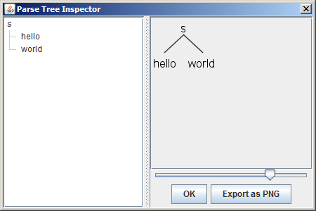

第一章——初识antlr
![]()
这本书第一部分的目标是让大家对antlr的能力有一个直观大致的了解，并且开启探索语言应用的旅程。在我们对于antlr有了大致的了解后，我们将会在第二部分耐心而系统地使用一系列现实世界中的例子来学习antlr。当然，在开始这些之前，我们需要安装antlr，并且尝试运行一个Hello world程序来入门学习。
1.1 安装antlr
antlr是使用java编写而成的，所以在你开始之前，你必须在你的电脑上安装java的运行环境（1.6或者更高的版本）。这是必需的，即使你想用antlr来生成别的语言写成的parser，例如C#、C++。（我希望在不久的将来还可以有其他的目标生成语言）。
为什么这本书使用命令行环境？
在这本书中，从始至终我们都会使用命令行（
shell或者cmd）来运行antlr和构建我们的应用程序。因为每个程序员所使用的开发环境和操作系统都不一样，而操作系统的命令行接口却是我们所共有的。使用命令行也会使得我们在学习语言应用开发中的每一步变得很明确直白。在整本书中，我使用的是Mac OS X的shell，但是这些命令理论上也是可以在任何类unix系统的shell和windows上运行的。
安装antlr很简单，你只需要下载最新的antlr的jar文件（译者注：书中使用的是4.0版本，这里使用的4.5.3，所以如果翻译部分出现版本不一致请忽视，这个不影响），例如:antlr-4.5.3-complete.jar，然后将它放在一个合适的位置就好了。这个jar文件包含了antlr所需的一切依赖，你可以直接运行antlr开发工具以及编译、执行由antlr生成的识别程序（词法分析器、语法分析器等）。简单地说，antlr可以将你给定的语法转换为一个可以识别符合这个语法的句子的程序。例如，给你一个json的语法，antlr可以自动生成一个程序，而通过一些在antlr运行时库中用来支持运行这个程序的类，你可以很方便地识别你输入的json文本。
这个jar文件也包含了两个其他很有用的类库：一个精简的tree layout库和StringTemplate（一个用来生成代码或者其他结构化文本的很有用的模块引擎）。而antlr 4.0是使用antlr v3写的（译者注：编译自举，维基百科，编译器的自举原理是什么？），所以在这个jar文件中也包含了之前版本的antlr。
StringTemplate模板引擎
StringTemplate是一个Java编写的用来生成源代码、网页、邮件、或者其他结构化文本的模板引擎（提供了C#、Python、Ruby和Scala的接口）。StringTemplate特别擅长用来作为多个生成目标、多个网站主题的模板生成器，它也支持国际化/本地化。jGuru.com用它进行了多年的开发。StringTemplate也被用来生成antlr的官网，并且用它来增强antlr v3和antlr v4的代码生成能力。详情可以查看它的官网。
你可以用浏览器从antlr的官网下载antlr，或者，你也可以使用命令行工具curl来获取：
$ cd /usr/local/lib
$ curl -O http://www.antlr.org/download/antlr-4.5.3-complete.jar
在Unix上，/usr/local/lib是存储像antlr这样的文件的绝佳位置。而在Windows上，似乎没有规定哪个文件夹是专门放这个的，所以你可以直接将它存放在你的项目目录下。大多数的开发环境都会要求你将jar文件放在你的语言应用项目的依赖列表（译者注：例如Eclipse的Build Path）中。你也不需要修改配置脚本或者配置文件之类的——你所需要做的仅仅是确保JRE知道怎么去加载这个jar文件（译者注：如下，确保环境变量CLASSPATH中有这个jar文件）。
因为本书从始至终都是使用命令行来运行antlr，所以在此之前，你需要做一件（也是唯一的一件）繁琐的事：设置CLASSPATH环境变量。设置好CLASSPATH后，JRE就可以找到antlr工具和运行时依赖了。在Unix系统上，你可以执行以下的命令，或者直接添加到shell的启动脚本（译者注：.bash_rc或者.bash.profile，依shell的种类而定，也可以添加到/etc/profile里）。
export CLASSPATH=".:/usr/local/lib/antlr-4.5.3-complete.jar:$CLASSPATH"
那个.，当前目录的标志，是一个很关键的地方。没有它，java的编译器和JVM会忽视当前目录下的.class文件。在本书中，编译、测试都是在当前目录下进行的。
完成这些之后，你就可以通过运行不带命令行参数的antlr工具来检查antlr是否安装成功。你可以用java -jar来引用jar文件，或者直接运行org.antlr.v4.Tool。
$ java -jar /usr/local/lib/antlr-4.5.3-complete.jar
ANTLR Parser Generator Version 4.5.3
-o ___ specify output directory where all output is generated
-lib ___ specify location of grammars, tokens files
....
$ java org.antlr.v4.Tool
ANTLR Parser Generator Version 4.5.3
-o ___ specify output directory where all output is generated
-lib ___ specify location of grammars, tokens files
....
如果一直都是通过输入这么长的命令来运行antlr话，那将是一件非常痛苦的事情，所以，你最好给这些命令起一个别名（alias）。在书中，我会使用antlr4命令，你可以在unix中这样定义：
alias antlr4='java -jar /usr/local/lib/antlr-4.5.3-complete.jar'
或者，你也可以将以下的脚本命令放在/usr/local/bin下（译者注：文件第一行的#!/bin/sh需要依系统而定）：
#!/bin/sh
java -cp "/usr/local/lib/antlr-4.5.3-complete.jar:$CLASSPATH" org.antlr.v4.Tool $*
在Windows上，你可以像下面一样（假设你把jar文件放在C:\libraries下）：
java -cp C:\libraries\antlr-4.5.3-complete.jar;%CLASSPATH% org.antlr.v4.Tool %*
做完这些后，你就可以直接输入antlr4运行了。
$ antlr4
ANTLR Parser Generator Version 4.5.3
-o ___ specify output directory where all output is generated
-lib ___ specify location of grammars, tokens files
....
如果你能看到运行后出现的帮助信息，说明你已安装成功了，你已经准备好成为antlr老司机了。
1.2 执行、测试antlr生成工具
这有一个识别像hello parrt和hello world这样的句子的语法：
Hello.g4
grammar Hello; //定义一个叫Hello的语法
r : 'hello' ID; //匹配关键字hello和跟随在后面的标识符
ID : [a-z]+; //匹配小写字母组成的标识符
WS : [ \t\r\n]+ -> skip; //跳过，不解析这些字符
为了保持一切的整洁，我们可以把语法文件Hello.g4放在某个单独的文件夹中，例如/tmp/test。然后我们就可以运行antlr并且编译生成的结果了。
$ cd /tmp/test
$ #复制粘贴或者下载Hello.g4到/tmp/test
$ antlr4 Hello.g4 #生成lexer和parser
$ ls
Hello.g4 HelloLexer.java HelloParser.java Hello.tokens HelloLexer.tokens HelloBaseListener.java HelloListener.java
$ javac *.java #编译antlr生成的代码
在Hello.g4上运行antlr工具将会生成一个可执行的识别器程序（HelloParser.java和HelloLexer.java）,但是我们并没有main方法来触发识别器工作（我们将会在下一章学习什么是lexer和parser）。这是在一个项目开始时很容易碰到的窘境。在开发真正的语言应用之前，你将会和几个不同的简单语法打交道，所以如果可以避免为每个语法写一个main方法将会很nice。
所幸，antlr在运行时库中提供了一个具有伸缩性的测试工具TestRig。它能在识别器识别文件输入和标准输入的过程中呈现很多的信息。TestRig通过使用java的反射机制来调用编译后的识别器。像之前一样，你最好也给它赋予一个别名或者写在shell脚本或者批处理文件中。我之后把它叫做grun，当然，你也可以命名为其他的。
alias grun='java org.antlr.v4.runtime.misc.TestRig'
这个测试工具使用语法名称、起始语法规则以及一些其他用来选择输出方式的选项作为参数（起始语法规则就像是main()方法）。假设我们想要打印在识别过程中构建的token（token是像关键字hello和变量parrt这样的单词），为了测试这个语法，我们可以像下面一样来运行grun：
$ grun Hello r -tokens #开始使用TestRig测试语法Hello的r规则，以token流形式输出
hello parrt #输入你需要识别的文本
EOF # unix输入ctrl-D，Windows输入Ctrl+Z
[@0,0:4='hello',<1>,1:0] #这三行是grun的输出
[@1,6:10='parrt',<2>,1:6]
[@2,12:11='<EOF>',<-1>,2:0]
输入grun命令，敲击换行符之后，控制台将会耐心地等待你输入hello parrt和一个换行符。随后，你还必须输入EOF来终止标准输入，否则，这个程序将会一直等你，直到天荒地老。一旦识别器读取完所有的输入，TestRig将会打印出所有的token（使用-tokens参数）。
输出的每一行代表一个token，它会将识别出的token的每个信息都打印了出来。例如，[@1,6:10='parrt',<2>,1:6]，它表明，这个token是第二个token（索引从0开始），token的内容是从6到10的字符（索引也是从0开始），内容是parrt，token类型是2，在第1行（从1开始），从第6列开始（索引从0开始，tab算做是单独的一个字符）。
我们也可以很容易地打印Lisp风格的语法解析树（译者注：Lisp风格，在我看来很像抽象语法树，括号中，起始第一个是树的根节点，之后跟随的是该节点的枝叶）：
$ grun Hello r -tree
hello parrt
EOF
(r hello parrt)
当然，我们有更直观的方式来表示识别器是如何识别输入的文本的——可视化解析树。带-gui参数运行TestRig，它将会创建一个类似下面的对话框：

不带参数运行TestRig将会输出一些帮助信息：
$ grun
java org.antlr.v4.runtime.misc.TestRig GrammarName startRuleName [-tokens] [-tree] [-gui] [-ps file.ps] [-encoding encodingname] [-trace] [-diagnostics] [-SLL] [input-filename(s)]
Use startRuleName='tokens' if GrammarName is a lexer grammar. Omitting input-filename makes rig read from stdin.
随着我们学习的深入，我们将会多次使用这些参数，以下简短介绍一下他们的用处：
-tokens打印token流。-tree打印Lisp风格的语法解析树。-gui创建一个对话框可视化显示语法解析树。-ps file.ps生成一个用PostScript表示的可视化语法解析树，并保存在file.ps中。这章的语法解析树就是使用-ps生成的。-encoding encodingname特别指定TestRig的输入文件的编码（如果存在本地化问题，出现乱码的话），例如，在后面的章节中，我们需要使用这个参数来解析一个使用日本编码的XML文件。-trace当进入、退出每个语法规则时，打印语法规则的名称和当前token。-diagnostics打开解析时的诊断信息。这个会生成一些特定情况下的诊断信息，例如，输入的文本具有二义性。-SLL使用更快但稍微能力弱一些的解析策略。
现在，我们已经安装好了antlr，并且用它在一个简单的语法上试了试锋芒，让我们回过头来熟悉一下antlr的整个使用流程，在下一章，我们将会学习一些重要的术语，而后，我们将会尝试一个新手项目——它可以识别并且翻译整型数组。在那之后，我们将会在第四章通过一系列有趣的例子来证明antlr的强大，以及它所适用的领域。